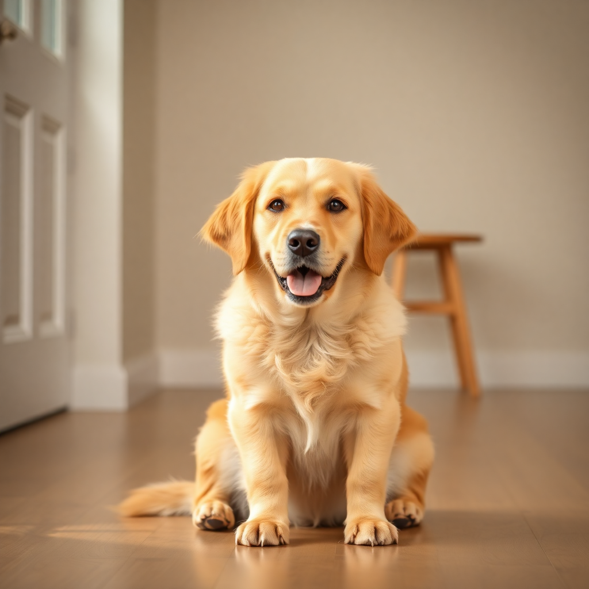
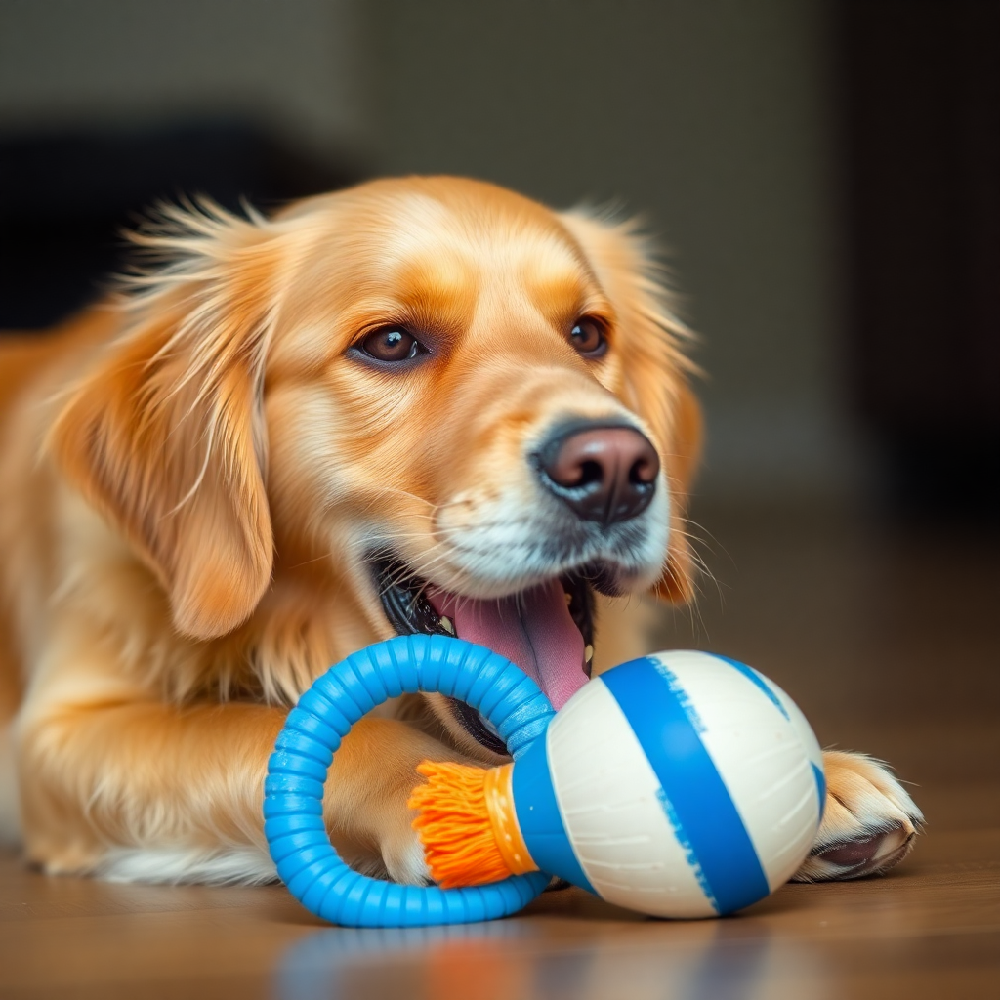
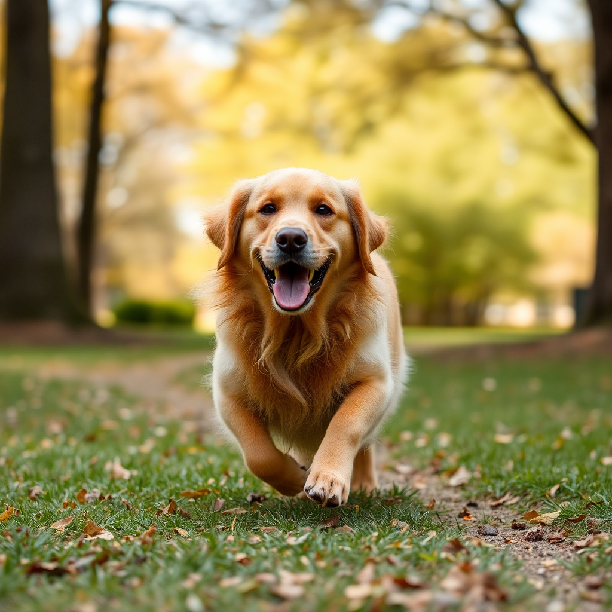
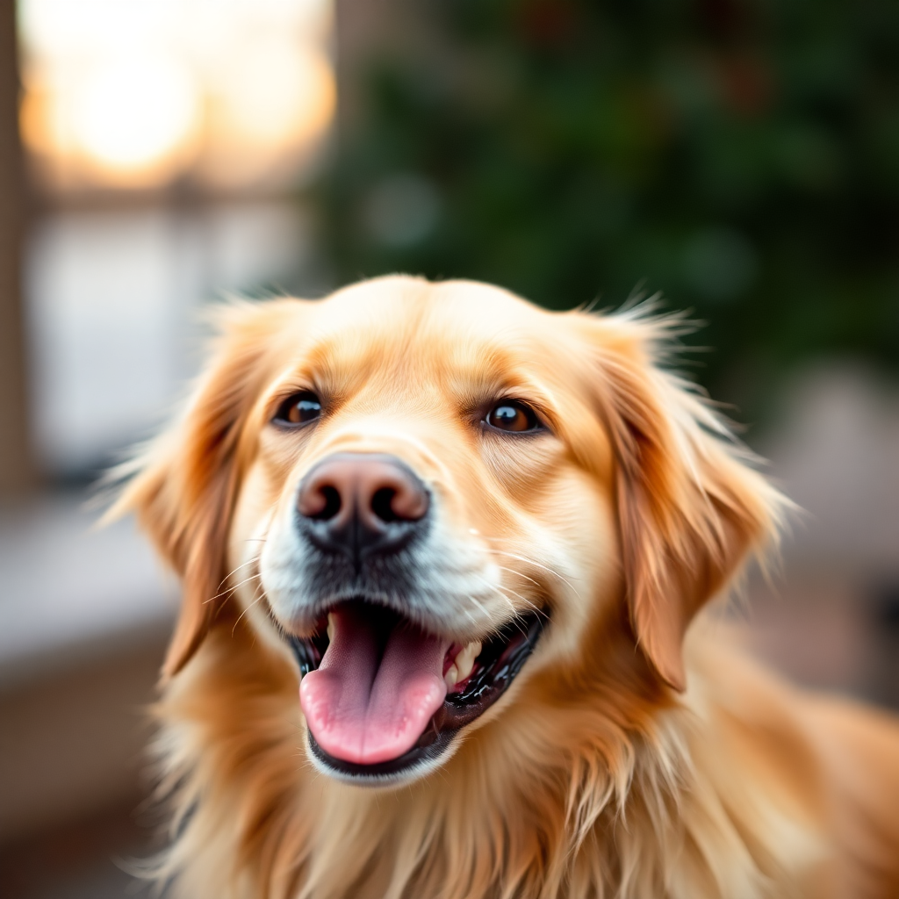

Max
Golden Retriever
 São Paulo, SP
São Paulo, SP
Disponível

Idade
2 anos

Idade
Grande

Sexo
Macho

Vacinado
Sim
Sobre o Max
Max é um Golden Retriever carinhoso e brincalhão que adora crianças. Ele é muito dócil, obediente e ama passear no parque. Está procurando uma família que possa dar muito amor e atenção.
Carinhoso
Brincalhão
Obediente
Ama Crianças
 Quero Adotar
Contatar ONG
Quero Adotar
Contatar ONG
Requisitos para Adoção

Termo de adoção responsável
Comprovante de residência
Entrevista com a família
Visita pré-adoção